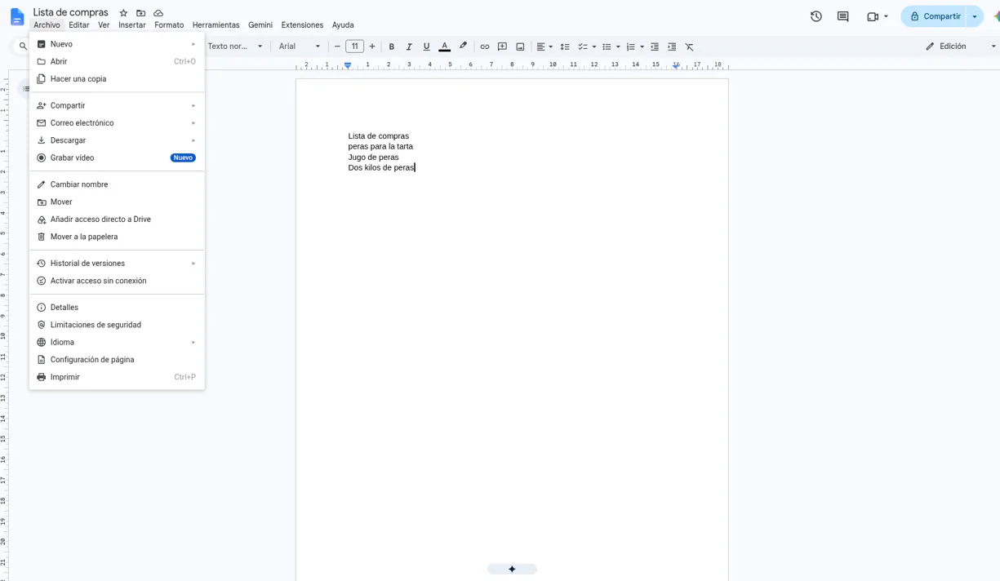
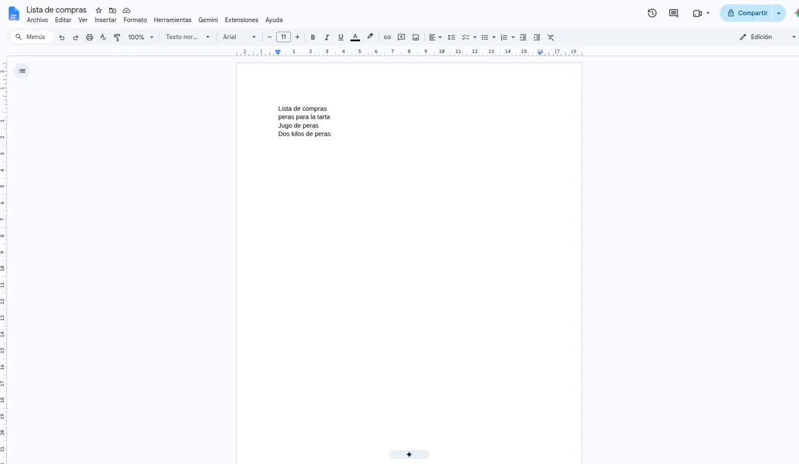

Curso de Google Documentos › Archivo › Lección 6
Lección 6 de 53 · menú Archivo
Cómo descargar un Google Doc en PDF en 3 pasos
Fecha del video: · Programado
¿Necesitás tu documento en PDF para enviarlo o imprimirlo? En Documentos de Google lo descargás en 3 pasos.
En el ejemplo usamos una lista de compras de prueba.
Paso 1: abrí el menú Archivo
Tocá «Archivo» y buscá la opción «Descargar».

Paso 2: elegí Descargar
Se despliega la lista de formatos: Microsoft Word (.docx), Documento PDF (.pdf), OpenDocument (.odt), texto sin formato (.txt), texto enriquecido (.rtf), página web (.html), EPUB (.epub) y Markdown (.md).

Paso 3: tocá «Documento PDF (.pdf)»
El archivo se guarda en tu equipo, normalmente en la carpeta Descargas, con el nombre del documento. Si tu documento tiene pestañas, la ayuda de Google indica que podés elegir entre la pestaña actual o todas.

Tip: en ese mismo menú también podés bajarlo como Word (.docx) si necesitás seguir editándolo fuera de Google Docs.
Mirá el Short
Estreno del Short: 20/11/2026 · 09:00 (hora Argentina)
Fuente oficial: Ayuda de Editores de Documentos de Google. Capturas propias en un documento de ejemplo («Lista de compras»). El video usa voz generada con IA.